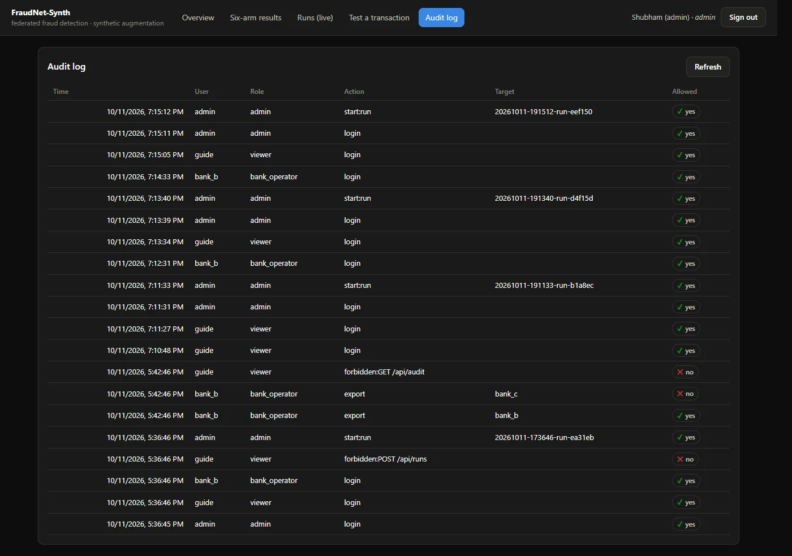
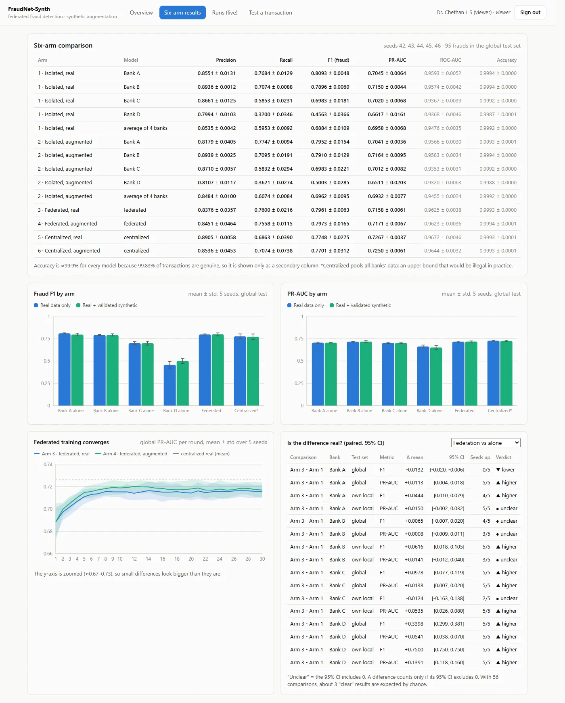
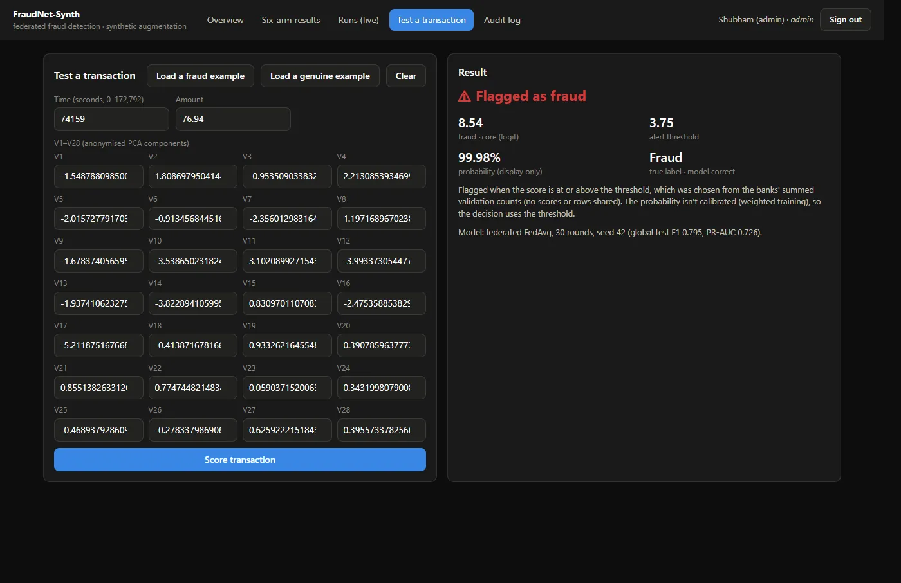

Share what the model learned, not the data.
Four simulated banks each hold a private slice of a public, anonymized credit card fraud dataset (ULB, Kaggle). Instead of pooling their data, they train one shared model with federated learning: each bank trains on its own rows and sends back only model weights. Banks with very few fraud examples can also add synthetic fraud data, which must pass a shared quality and privacy check before it is used.
The team then tested whether this works by comparing six set-ups: each bank alone, banks federated, and all data pooled in one place, each with and without synthetic data, across five runs.
What I did, and what the team did.
My work
- Researched federated learning and synthetic data generation, and worked on how the team would tackle the problem: training one shared model across banks without moving any data, with synthetic fraud examples for banks that have too few.
- Owned the Bank B node, a data-rich bank whose extra fraud examples come from CTGAN, a model that learns from the bank's own fraud rows.
- Ran Bank B on my own laptop in the team's first cross-device test with the server on 11 October 2026: 10 training rounds over a phone hotspot. In each round my laptop received the shared model, trained it on Bank B's 41,801 rows and sent back only about 17 KB of weights. Bank B's rows never left the laptop.
- Presented the project, including how CTGAN learned from Bank B's 82 fraud rows and why 814 of its 1,000 synthetic rows passed the validation gate.
Team work
The system was engineered mainly by teammate Shubham Kumar Singh, with Palleti Pradeepa and Sathvik D running Banks C and D. The decisions below are recorded in the team's decision log. I describe them here as a case study of the project I was part of.
Fraud is rare, and the data that would help is locked away.
Each bank sees only its own customers. Fraud is a tiny share of transactions, so a small bank may have only a handful of fraud cases to learn from. Pooling data across banks would help, but customer transaction data cannot leave the bank. The result is that the banks that most need a better model are the least able to build one.
Can banks get the benefit of shared data without sharing the data?
Who the system serves.
| User | Need | What they can do |
|---|---|---|
| Admin (project lead) | Run and compare experiments, prepare models, oversee security | Start and cancel runs, start data generation, read the audit log |
| Bank operator (one per bank) | See results and use their own bank's synthetic data | View everything, export only their own bank's validated synthetic data |
| Viewer (project guide) | Review progress and results without changing anything | Read-only access |
The wider context is a bank fraud team: data-rich banks want a model that keeps up with rare fraud, and data-poor banks want one at all. Both are bound by data privacy rules.
Decisions, requirements and rules.
Product objective
Give every bank, especially the smallest, a fraud model close to what pooled data would give, while no customer row ever leaves its bank. Be honest about what works: the team set out to test synthetic data, not to prove it.
Key decisions
Measure what matters, not accuracy
Evaluation design- Decision
- Judge models on fraud F1 and PR-AUC. Accuracy is shown but never used as a headline.
- Why
- Every model scored about 99.9% accuracy because almost all transactions are genuine. Accuracy would make a useless model look excellent.
Two ways to create synthetic fraud
Decision log D-015, D-016- Decision
- Data-rich banks use CTGAN on their own rows. Data-poor banks use an LLM that sees only summary statistics: mean, spread and three percentiles. No minimum or maximum, and never a real row.
- Alternative
- Show the LLM real rows as examples, which gives better quality data.
- Trade-off
- With only 18 to 28 fraud rows, a minimum or maximum would reveal one real customer's value. The team accepted lower data quality to keep the privacy promise, and measured the cost.
A live demo that actually federates
Decision log D-020- Proposal
- The guide suggested four public GitHub repositories, one per bank, to show the model moving.
- Decision
- Run each bank on a separate laptop over a shared network, with only weights travelling between them.
- Why
- Repositories store files but cannot train anything, and public repositories would publish each bank's data, the opposite of the project's promise. The new set-up met the guide's goal, seeing the model move, without breaking privacy.
Report the result that did not work
Results- Decision
- Report that synthetic data gave no reliable improvement, as a finding.
- Why
- 33 of 36 paired comparisons were unclear. Hiding it would have overstated the product; reporting it tells the next team where not to invest.
Scope and trade-offs
| In scope | Deferred or out of scope |
|---|---|
| Federated training across four banks with weights only | Differential privacy and secure aggregation (future scope) |
| Synthetic data with a shared validation gate | More than one dataset or data split |
| Dashboard, role-based access and audit trail | Real bank deployment; results come from single-machine simulation |
| Optional extensions: fairness across banks (q-FedAvg) and controlled miss rate (conformal risk control) |
Product outcome in plain language
- Learning together without sharing data worked: the federated model reached a fraud F1 of 0.796, against 0.775 for a model trained on all data pooled together, a set-up that would not be legal in practice.
- The smallest bank benefited most. Bank D's F1 rose by 0.34 with federation, in every one of the five runs.
- Synthetic data did not reliably help, so it should not be the priority for a next version.
Business problem
Banks need better fraud detection, but regulation and customer trust stop them from sharing transaction data. The business requirement is a way to collaborate on a model that keeps every bank's data inside the bank, with a clear record of who did what.
Stakeholders and user roles
| Stakeholder | Interest | System role |
|---|---|---|
| Participating banks (A to D) | Better fraud detection, data stays private | Bank operator |
| Project lead | Run experiments, keep results reproducible | Admin |
| Academic guide | Review progress and evidence | Viewer, read-only |
Requirements
Retrospective analysis of the delivered system, based on the repository and decision log. Not an original requirements document.
| ID | Requirement | Type | Status |
|---|---|---|---|
| FR-1 | Banks train a shared model and exchange only model weights | Functional | Delivered |
| FR-2 | Data-poor banks can generate synthetic fraud rows from summary statistics only | Functional | Delivered |
| FR-3 | Every synthetic row passes one shared validation gate | Functional | Delivered |
| FR-4 | Users log in and see only what their role allows | Functional | Delivered |
| FR-5 | Bank operators export their own bank's validated synthetic data | Functional | Delivered |
| FR-6 | Admins start and monitor experiment runs; users can test a single transaction against the federated model | Functional | Delivered |
| NFR-1 | No real or synthetic row crosses from one bank to another | Privacy | Enforced and tested |
| NFR-2 | Security-relevant actions are recorded in an audit log | Compliance | Delivered |
| NFR-3 | The demo runs with no internet connection | Reliability | Verified |
| NFR-4 | Differential privacy and secure aggregation | Privacy | Future scope |
A requirement conflict, and how it was resolved
"Export the dataset" versus "no data crosses a bank boundary"
Decision log D-045- Conflict
- The feature list asked for dataset export. The privacy rule said no synthetic row may cross from one bank to another.
- Options
- Export aggregates only; let any logged-in user export (breaks the rule); export to the data owner only.
- Resolution
- Export returns only that bank's validated synthetic file, never real rows, and only to that bank's own operator. Every attempt is written to an audit log.
- Proof
- In the recorded check, Bank B exporting Bank B's data was allowed; Bank B requesting Bank C's data was refused; the viewer trying to read the audit log was refused.
Business rules
- Only model weights and a few summary numbers travel between a bank and the server.
- A bank operator's export scope comes from their login token, not from what they request.
- The audit log records logins, refused actions, started runs and every export attempt, and only the admin can read it.
- A failed login gives the same message whether or not the username exists.
Core workflow
Constraints
- One public, anonymized dataset; small fraud counts make per-bank results noisy (Bank D's local test set has 4 frauds).
- Runs on ordinary laptops with CPU only.
- The external LLM has a daily quota, so data-poor banks use saved, pre-generated files in the demo.
Solution alignment
The delivered system meets the core business need: collaboration without sharing data, with role-based access and an audit trail. The one feature that pulled against that need, export, was narrowed until it fit the privacy rule rather than the other way round.
Three layers, one privacy rule.
A React dashboard talks to a Node.js and Express gateway, which handles login, roles and the MongoDB record of runs and audit events. The gateway forwards allowed requests to a FastAPI service that runs data generation, validation and federated training with Flower across the four banks.




Evidence, not claims.
- 77 Python tests and 9 gateway tests pass with one command, plus a dashboard build check. They cover the data split, both generation engines, the validation gate, the metrics, the privacy rule and role-based export.
- A 19-point pre-flight check confirms the demo is ready, and the full demo was run with internet access blocked.
- The two-laptop test (Bank B on my laptop, server on a teammate's) ran 10 rounds, and the client and server logs agree for every round.
What the results mean.
| Set-up | Fraud F1 | PR-AUC | In plain words |
|---|---|---|---|
| Bank A alone / Bank D alone | 0.809 / 0.456 | 0.705 / 0.662 | A large bank does fine alone; a small one does not |
| Federated, real data | 0.796 ± 0.006 | 0.716 ± 0.006 | Collaboration without sharing data |
| Federated, real + synthetic | 0.797 ± 0.017 | 0.717 ± 0.007 | Synthetic data adds no reliable gain |
| All data pooled (not allowed in practice) | 0.775 ± 0.028 | 0.727 ± 0.004 | The upper reference point |
Five runs, one global test set with 95 frauds. Source: the project's results annexure.
What I learned
- A requirement list can contain rules that contradict each other. Writing the conflict down and choosing on purpose is better than letting it be settled in code.
- The headline metric decides what the team optimizes. Choosing the wrong one, here accuracy, would have hidden the real problem.
- A negative result is still a product decision: it tells you where not to spend the next sprint.
Where it could go next.
- Add differential privacy and secure aggregation, so even model updates reveal less.
- Test on more than one dataset and data split before drawing firm conclusions.
- Move the four-laptop demo set-up towards a pilot with real institutional constraints.